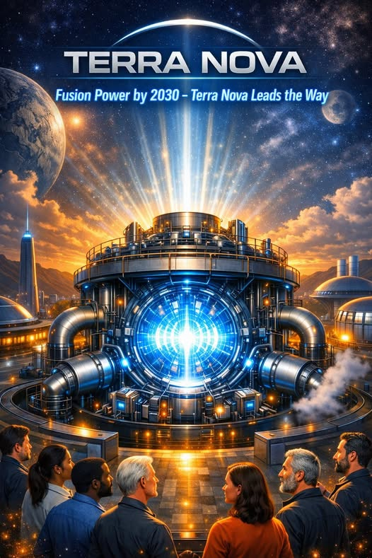

← Terra Nova Development — Article Index
Article #144
Fusion Power: The Ultimate Energy Frontier
How Terra Nova Could Help Turn the Power of the Stars into Abundant Energy for Humanity

The Promise of an Energy Civilization
Imagine a civilization in which abundant, dependable electricity is available wherever people live. Hospitals operate without fear of shortages. Desalination plants produce fresh water for dry regions. Factories manufacture affordable building materials. Farms and food systems become more productive. Transportation becomes cleaner. Artificial intelligence and advanced computing operate on an energy system designed to serve humanity rather than constrain it.
Nuclear fusion may eventually help make that vision possible. It is the process that powers the stars: light atomic nuclei combine into heavier nuclei, releasing energy. Scientists and engineers are working to reproduce useful fusion reactions in carefully controlled machines here on Earth.
Terra Nova Development should view fusion not as a guaranteed miracle arriving on a particular date, but as one of the most consequential technologies worth helping to develop. If fusion becomes commercially practical, reliable, and affordable, its impact could reach nearly every aspect of civilization.
1. Why Fusion Is So Extraordinary
Fusion offers a potentially powerful combination of characteristics: energy-dense fuel, no carbon dioxide emissions from the fusion reaction itself, and the possibility of dependable electricity generation independent of sunlight and wind conditions. The common near-term approach uses deuterium and tritium, two isotopes of hydrogen.
Deuterium can be extracted from water. Tritium is scarce and radioactive; most proposed power systems would need to breed it using lithium-containing materials inside the reactor. That breeding process is a major unresolved engineering challenge, not a detail that can be assumed away.
Unlike conventional nuclear fission, fusion does not rely on a self-sustaining fission chain reaction. But a fusion plant is not risk-free: high-energy neutrons can damage materials and activate components, tritium requires careful containment, and heat and electrical systems still require extensive safety engineering.
The opportunity is enormous precisely because the engineering challenge is so demanding. Successful fusion could offer a new source of firm, low-carbon power—but it must prove itself in real plants, not just compelling illustrations.
2. We Have Already Crossed Important Scientific Thresholds
Fusion is not a fantasy. Researchers have achieved significant milestones in magnetic confinement and laser-driven fusion. Some experiments have produced more fusion energy than the energy directly delivered to the fuel or target. Those achievements matter: they demonstrate important physics and validate decades of research.
But a scientific energy gain is not the same as a power station delivering net electricity to the grid. A commercial facility must account for the electricity consumed by magnets, lasers or heating systems, cooling, fuel handling, maintenance, and conversion equipment. It must operate repeatedly and reliably, not merely succeed in a single experiment.
This distinction should strengthen our ambition rather than weaken it. The next step is to turn scientific achievement into robust engineering: materials that survive neutron exposure, efficient heat extraction, practical tritium breeding, maintainable reactor components, and an economic design that competes with other energy sources.
3. The Year 2030: A Goal, Not a Guarantee
The accompanying illustration imagines Terra Nova helping lead a fusion-powered future by 2030. That is an aspirational milestone, not an established commercial forecast. Demonstration schedules are ambitious and subject to scientific, regulatory, financing, and construction uncertainties.
Terra Nova can still adopt the urgency expressed by that date. The right question is not whether we can announce that fusion has solved energy by 2030. It is whether we can use the years ahead to assemble expertise, support credible demonstrations, identify suitable sites, and prepare the infrastructure needed if the technology becomes commercially ready.
We should celebrate every genuine breakthrough while refusing to confuse hope with proof. Credibility is an asset, particularly in an industry where investors, communities, and regulators must make long-term commitments.
4. Terra Nova as an Energy Builder and Integrator
Terra Nova could eventually participate as a developer, owner, operator, or partner in a network of fusion-based energy hubs. Its role would be to connect scientific breakthroughs with the practical needs of communities, industries, and public infrastructure.
A credible program would begin with partnerships rather than pretending that a new organization can independently design and license a fusion reactor. Universities, fusion developers, grid operators, construction firms, utilities, safety specialists, and local governments all possess essential capabilities.
Each future energy hub would need a realistic business plan, appropriate permitting, trained personnel, emergency procedures, physical and cybersecurity, insurance, maintenance strategies, and accountable governance. Artificial intelligence could assist with monitoring, forecasting, and optimization, but it should not replace independent safety systems or qualified human oversight.
The objective is transparent, efficient energy production—not exemption from the engineering disciplines and public protections that make large power facilities trustworthy.
5. What Abundant Fusion Electricity Could Make Possible
Energy is an input to nearly everything humanity builds. More plentiful low-carbon electricity could make desalination and water treatment more affordable in some regions; help electrify industrial processes; support recycling and material recovery; supply data centers; and enable new forms of agriculture and manufacturing.
It could also support production of hydrogen and other fuels for applications that are difficult to electrify directly. High-temperature industrial heat may be another opportunity, depending on reactor design and the economics of heat delivery.
Yet energy abundance alone will not eliminate poverty or guarantee affordable housing. Transmission networks, materials, skilled labor, land, institutions, distribution, and political decisions will still matter. A cheap power source is a powerful tool, not an automatic substitute for sound social systems.
That is why Terra Nova’s larger vision matters: energy technology should be integrated with healthcare, housing, education, clean water, and the other systems that determine whether human beings actually benefit.
6. Fusion Should Complement the Energy We Can Build Today
We do not need to wait for fusion to expand access to clean electricity. Solar, wind, geothermal, hydropower, existing nuclear generation, storage, efficiency improvements, and grid modernization can make meaningful contributions now. Different regions require different combinations.
Fusion should be developed alongside these resources, not used as an excuse to postpone them. A future fusion plant may provide firm electricity that complements variable renewable generation, but whether it is competitive will depend on actual costs, availability, construction time, and system needs.
Terra Nova’s floating solar concept, for example, is a near-term technology pathway. Fusion is a longer-term opportunity. Both belong in a portfolio guided by evidence, resilience, and the needs of the communities being served.
7. A Practical Road Map for Terra Nova
First, establish a fusion research and partnerships initiative to monitor credible technical progress and identify potential collaborators. Second, develop a transparent evaluation framework covering net electric output, fuel cycle, materials life, safety, capital cost, maintenance, and operating economics.
Third, explore suitable future development sites near transmission capacity, industrial customers, water resources, and skilled workforces. Fourth, investigate financing and ownership structures that reward affordable energy delivery rather than speculation.
Fifth, prepare workforce programs in electrical engineering, advanced manufacturing, controls, construction, radiation protection, and plant operations. Sixth, commit to public reporting and community participation from the outset.
No reactor should be built simply because its concept is inspiring. It should be built when its safety case, performance, cost, and public value can be demonstrated.
8. Beyond Scarcity: The Human Meaning of Fusion
The deeper promise of fusion is not merely the ability to generate more kilowatt-hours. It is the possibility of loosening one of civilization’s most persistent constraints. Reliable energy can expand the range of things societies can afford to do: purify water, preserve food, manufacture necessities, connect communities, and reduce pollution.
But the future will not be transformed by technology alone. It will be transformed by what we choose to do with technology. We can use new energy sources to deepen inequality, or to expand opportunity. We can concentrate benefits, or design systems that share them.
Terra Nova’s answer should be clear. The purpose of energy development is not simply to create another industry. It is to make the world more capable of meeting human needs with dignity and care.
Conclusion: The Power of the Stars, in Service of Humanity
Fusion may ultimately become one of humanity’s most important energy sources. It has the potential to provide abundant, dependable, low-carbon power on a scale that could reshape infrastructure and industry. Whether it can become the ultimate solution to all energy needs remains unproven; practical limits, costs, competing technologies, and local conditions will determine its eventual role.
The appropriate response is neither dismissal nor blind certainty. It is determined, disciplined optimism.
Let us pursue fusion with the urgency it deserves. Let us build clean energy with the technologies already available. Let us insist that scientific progress be matched by responsible engineering and broad human benefit.
And if we succeed in bringing the power of the stars into everyday service, let it illuminate more than our cities. Let it illuminate a new understanding of what civilization can accomplish when its knowledge is shared and its resources are used wisely.
There is no them. There is only us.
Terra Nova Development • Article #144